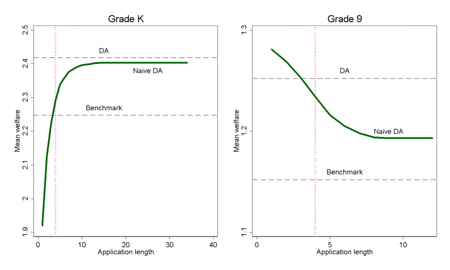

Policy implications
From academia to public policy
Model estimates and policy experiments
- We estimate a model of school choice and use it to evaluate the effect of proposed policies.
- Households try to do their best, but they make mistakes in their application if they have incorrect beliefs
- We bring together data from our surveys and from the school placement process.
Finding 1
- In such a system, households only need to know what they like, not what others are doing
- This makes it much easier for households who do not have perfect information to submit their best application. 
- It would be also very helpful to increase the number of schools that the household can list on their application, especially in kindergarten where there are more schools to choose from.
Finding 2
- Using our survey data, we can analyze the kinds of errors that households commit at the time of filling out an application.
- If we had skipped the survey and just assumed that households sent the best possible application, finding 1 would have been reversed.
- Policymakers and researchers should take application mistakes into account when studying choice policies in other cities.